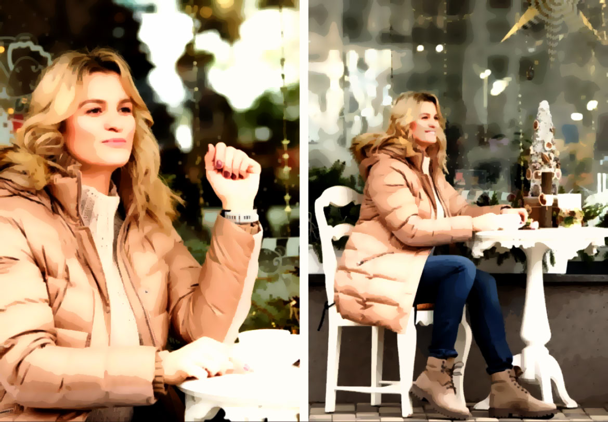
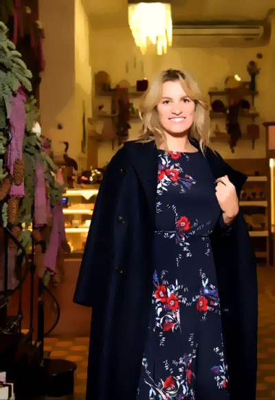

Інтерв'ю з Наталією Добринською
Розкажіть, будь ласка, що ви відчували/про що думали, коли стали олімпійською чемпіонкою? У той самий момент, коли отримували заповітну золоту медаль?
Участь в Олімпійських іграх — це основна ціль будь-якого спортсмена! А перемога — це мрія, про яку навіть говорять рідко. Я думаю, що момент нагородження був піком моєї спортивної кар’єри, хвилина, у якій зійшлися всі наявні емоції та відчуття: радість від досягнення мрії, сум через те, що завершилась якась довга дорога до Олімпу, нерозуміння наступної цілі, почуття вдячності батькам, тренерам та друзям, а також гордість під час підняття нашого прапора. Це дуже цікавий досвід, який можна пережити лише один раз у житті!
Життя після професійного спорту, яке воно?
Ну, насамперед, олімпійці — це також люди! У нас ті самі цінності та бажання. Ми хочемо сімейного затишку, цікавих викликів та їхньої реалізації. Виклики обов’язково мають бути складними, адже все, що просто, — не мотивує, а неможливе — демотивує! Тому життя після професійного спорту складається з виховання трьох діточок, які з раннього дитинства не можуть жити без спорту, догляду за коханим чоловіком та навчання! Останнім часом я дедалі більше розумію, як багато нових знать потрібно здобути. Також я спільно із комісією атлетів та НОК України втілюю освітній проект для спортсменів.
Як проходить ваш звичайний день?
Мій день починається приблизно з 6 ранку, коли прокидається Макс (йому 5 місяців) і співає нам ранкові енергійні пісеньки. Я б сказала, що через це у всіх нас день починається о шостій. Далі старші дітки біжать до садочка, а я — до спортзали. Після обіду намагаюся обов’язково приділити час собі: вивчаю англійську мову, займаюся співом чи малюванням тощо. Потім на черзі хатні дрібниці, а там вже й малюки повертаються додому. У вихідні ми намагаємося відпочивати усією родиною: йдемо в кіно чи на дитячі вистави, гуляємо в парках, катаємося на роликах чи самокатах або ж відвідуємо басейн. Взагалі, коли у тебе троє дітей, життя ніколи не буває сумним!
Як наразі ставитесь до режиму?
Основна складова спорту — це режим! Тому після 25 років у професійному спорті мені надзвичайно легко встановити режим дітлахам і собі. А чоловік в мене також неймовірно організований, тож можемо дозволити собі життя без нянь і помічників. Коли втомлюємось, кличемо на допомогу бабусю й дідуся. А ще я вважаю, що сон — основа гарного самопочуття та продуктивності! Тому намагаюсь приспати дітей не пізніше 21:30. А далі в нас є трішки вільного часу з чоловіком, щоб обговорити новини за день, поділитися думками, збудувати нові плани або домовитись про зустрічі.

Скільки разів на тиждень займаєтесь спортом зараз? А як щодо системи харчування? Є продукти-табу чи якісь інші обмеження?
Зараз я почала повертатись у свою звичну спортивну форму, приділяю більше часу спортивному графіку та слідкую за своєю культурою харчування. Заняття в залі кросфітом (тричі на тиждень) я чергую з пробіжками на свіжому повітрі, також тричі на тиждень. Біжу не багато — не довше години, приблизно 7-10 км. Щодо харчування, то тут простіше. Зранку в основному це складні вуглеводи та білки (кіноа, дикий рис, висівки, яйця, авокадо), в обід — овочеві супи та м'ясо, а ввечері — нежирна біла риба та овочі після термообробки. Інколи можу перекусити горіхами. Намагаюсь зовсім не вживати цукру, солодощів та хліба. Звичайно, випробовую на собі кето та LCHF дієти, люблю експериментувати.
Ваш улюблений формат відпочинку?
Улюблений формат відпочинку — з моїм чоловіком удвох. Він точно знає, як зробити відпочинок суперцікавим та активним, а головне, спланувати все чітко й заздалегідь. Це може бути зимовий сноуборд або літній кайт-серф. Цього року я неодмінно зроблю свій перший сертифікат з дайвінгу! Мрію про це вже 6 років. Але інколи, скажу по-секрету, я відпочиваю сама чи з подругами. Тоді я лечу на йога ретрит до Індії або з дівчатами вирушаємо в наметові подорожі. От зараз плануємо хайкінг довкола озера Комо в Італії.
Чи є у вас guilty pleasures (улюблена, проте не дуже корисна страва/шкідливі звички тощо)?
Не знаю, чи бувають жінки без guilty pleasures. Я інколи з таким задоволенням можу закатати домашній скандал! Звичайно, це швидко проходить, але всі відразу в тонусі. А якщо серйозно, то шкідливих звичок не маю. Намагаюся дотримуватись здорового і щасливого способу життя й пропагувати його.
Яких принципів дотримуєтесь у вихованні дітей?
Діти — дзеркальця своїх батьків. Тому ми не намагаємося їх виховувати. Ми просто з ними живемо, вчимо, пояснюємо, розказуємо, сміємося, інколи сваримося. Але завжди з любов’ю! Я переконана, що любов у всіх її проявах — це запорука вихованих дітей. До того ж я багато їх цілую, поки ще дозволяють.
Чи є у ваших малюків пристрасть до спорту? Чи хотіли б ви, щоб вони стали професійними спортсменами?
Так! У Дарія зараз пристрасть до боротьби джиу-джитсу. Він просто фанатіє від тренувань і з нетерпінням чекає на кожне наступне. Алісія сама обрала собі гімнастику, тепер у нас вечорами купа трюків від неї: це і мостики, і майже шпагати, і такі, назву яким ще не вигадали. А Макс спостерігає за цим зі спокоєм мудреця та чекає свого часу. Якась дуже спортивна сім’я у нас вийшла!
Розкажіть про ваше ставлення до моди? Як би охарактеризували свій стиль?
Я не можу сказати, що я модниця, але, звичайно, люблю гарно виглядати. Мені до вподоби стилі смарт-кежуал і спортивний шик. Останнім часом дедалі частіше помічаю, як стрімко розвивається українська фешн-індустрія. І дуже цьому радію, адже у наших дизайнерів є неймовірна кількість надзвичайно гарного одягу. У своєму гардеробі я віддаю перевагу бежевим і пастельним спокійним кольорам. Вважаю, що жінка повинна бути впевненою в собі та одночасно нести якусь загадковість!